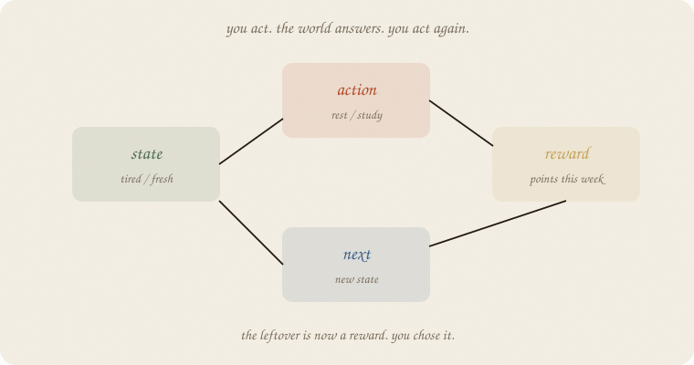
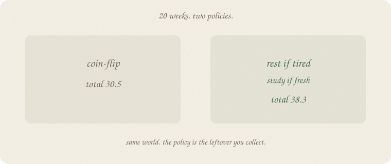
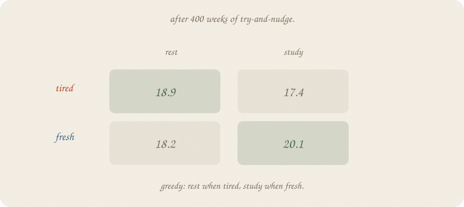
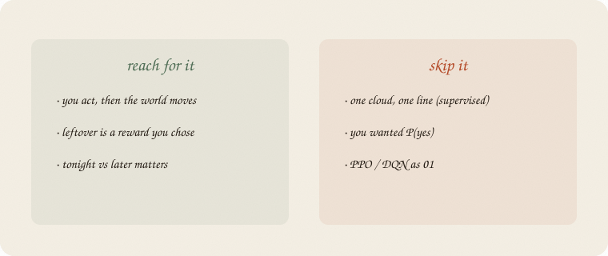

datazines · a sketchbook

Read 01 linear regression and 01 gradient descent first. Same exam world: study vs rest. Not a cloud of eighty people. A week, then the next week. Supervised guessed a grade from hours. This notebook picks rest or study, then sees what the week did.
Bandits (02 bandits) have no next-state. The table, named: 03 Q.
Flip it like a notebook. One page = one idea. Done.
Supervised: a pile of people, x in, y out. The leftover is y − ŷ. You did not pick x.
Here there is no frozen pile. You do something. The world answers. That answer is the next situation.
Four names:
| word | this week |
|---|---|
| state | tired or fresh |
| action | rest or study |
| reward | points this week (how the exam-life paid you) |
| next | tired or fresh after that |
People call the four-pack a loop. The policy is the rule: from this state, which action? The sum of rewards is the score — not leftover (y − ŷ). Q later treats target − Q as the miss (03 Q).
Cause asked what happens if you do the lever (01 confounding). RL is that do(), again and again, and the lever changes the next state.
Tired: rest usually makes you fresh (reward ~1). Study while tired pays ~0 and you stay tired.
Fresh: study pays ~3 and often tires you. Rest pays ~0 and you stay fresh.

Twenty weeks, start tired.
| policy | total |
|---|---|
| coin-flip rest/study | 30.5 |
| rest if tired, study if fresh | 38.3 |
Same world. The policy is the leftover you collect. Random still gets some 3s. Sensible banks rest until fresh, then studies.
First six sensible weeks (state, act, reward, next):
(tired, rest, 0.74, tired) → rest again → fresh → study 2.65 → tired → …
You can read the loop aloud. That is 01.
You do not have to invent the sensible rule. Try, get a reward, nudge a table.
Rows = states. Columns = actions. Entry = “from here, this act, then act greedily after — how many points, roughly.” People call that Q.
Nudge (quiet, like a learning rate):
Q(state, act) ← Q + 0.3 × [reward + 0.9 × best Q(next) − Q]
The 0.9 is later is a bit less than now. Tomorrow’s 3 is not worth a 3 today. Same volume habit as descent; the leftover is a target, not a downhill slope on a bowl.
400 weeks, 20% random tries so you still sample the dull act.

| rest | study | |
|---|---|---|
| tired | 18.9 | 17.4 |
| fresh | 18.2 | 20.1 |
Greedy: rest when tired, study when fresh. The table found the policy from page 2.
A table you can screenshot.
If you keep only one thing:
state, action, reward, next. then again.
Exam loop. Two states, two acts. Random policy and Q share one world. Sensible policy gets a fresh draw of the weeks.
import numpy as np
rng = np.random.default_rng(7)
# 0 tired, 1 fresh | 0 rest, 1 study
def step(s, a, rng):
if s == 0 and a == 0: # tired, rest
return 1.0 + rng.normal(0, 0.15), 1 if rng.random() < 0.8 else 0
if s == 0 and a == 1: # tired, study
return 0.0 + rng.normal(0, 0.15), 1 if rng.random() < 0.1 else 0
if s == 1 and a == 0: # fresh, rest
return 0.0 + rng.normal(0, 0.15), 1 if rng.random() < 0.9 else 0
return 3.0 + rng.normal(0, 0.15), 1 if rng.random() < 0.2 else 0 # fresh, study
def run(policy, rng, n=20):
s, total, hist = 0, 0.0, []
for _ in range(n):
a = policy(s)
r, ns = step(s, a, rng)
hist.append((int(s), int(a), round(float(r), 2), int(ns)))
total += r
s = ns
return total, hist
rng_r = np.random.default_rng(7)
rng_s = np.random.default_rng(8)
t_r, h_r = run(lambda s: int(rng_r.random() < 0.5), rng_r)
t_s, h_s = run(lambda s: 0 if s == 0 else 1, rng_s)
print("random 20-week total", round(t_r, 2))
print("sensible 20-week total", round(t_s, 2))
print("sensible first 6 (state, act, reward, next)")
for row in h_s[:6]:
print(" ", row)
rng_q = np.random.default_rng(7)
Q = np.zeros((2, 2))
s = 0
for _ in range(400):
a = int(rng_q.integers(0, 2)) if rng_q.random() < 0.2 else int(np.argmax(Q[s]))
r, ns = step(s, a, rng_q)
Q[s, a] += 0.3 * (r + 0.9 * Q[ns].max() - Q[s, a])
s = ns
print("Q tired [rest, study]", np.round(Q[0], 2).tolist())
print("Q fresh [rest, study]", np.round(Q[1], 2).tolist())
print("greedy", ["rest" if i == 0 else "study" for i in np.argmax(Q, axis=1)])
random 20-week total 30.5
sensible 20-week total 38.34
sensible first 6 (state, act, reward, next)
(0, 0, 0.74, 0)
(0, 0, 0.8, 1)
(1, 1, 2.65, 0)
(0, 0, 0.86, 1)
(1, 1, 3.14, 0)
(0, 0, 1.12, 1)
Q tired [rest, study] [18.88, 17.39]
Q fresh [rest, study] [18.15, 20.06]
greedy ['rest', 'study']
Coin-flip 30.5. Sensible 38.3. Q’s greedy row is rest / study — the same rule. 0.3 is the nudge. 0.9 is “later counts a bit less.” 0.2 is how often you try the other act. No sklearn estimator — the loop is the lesson.
| word | meaning |
|---|---|
| state | where you are (tired / fresh) |
| action | what you do (rest / study) |
| reward | points this step |
| next | state after the act |
| policy | state → action |
| Q | table of “how good is this act from here” |
Also called (in a room):
| here | there |
|---|---|
| loop | MDP step |
| Q | action value |
| 0.9 | discount |
| 0.2 try-at-random | ε-greedy |

Reach for it when
Skip it when
Pays you: the four names. A policy you can read. A table that can find it.
Costs you: a world-model (or a lot of weeks). Random tries hurt now to learn. Not a grade line. Not a sampler.
The loop. Next: 02 bandits — no next-state. The table, named: 03 Q.
Flip it like a notebook. One page = one idea.